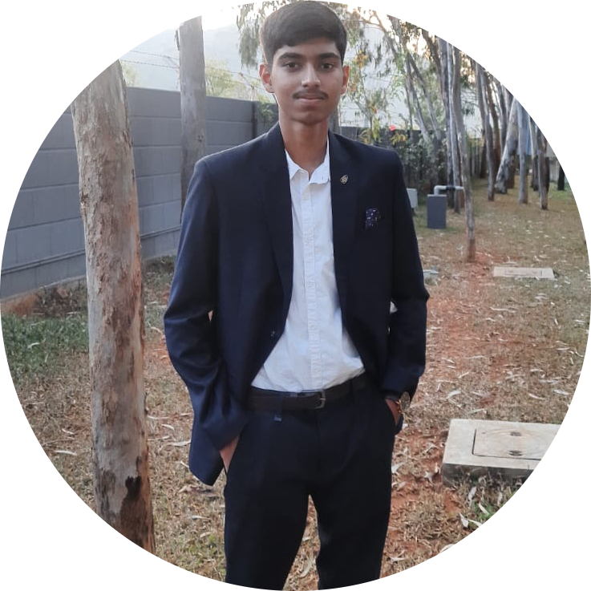

|  | Tushar GururajUndergraduate student | Computer Science engineering ➤ Yet to be alloted college, Unknown city. |
|
|
| ⮞ Research | ⮞ Basketball | ⮞ Scribing |
| ⮞ Wanderlust | ⮞ Photography | ⮞ Culinary |
◉ Bizarre encounters can be the catalyst for extraordinary tales and breakthroughs, connect to me through Contact-me.